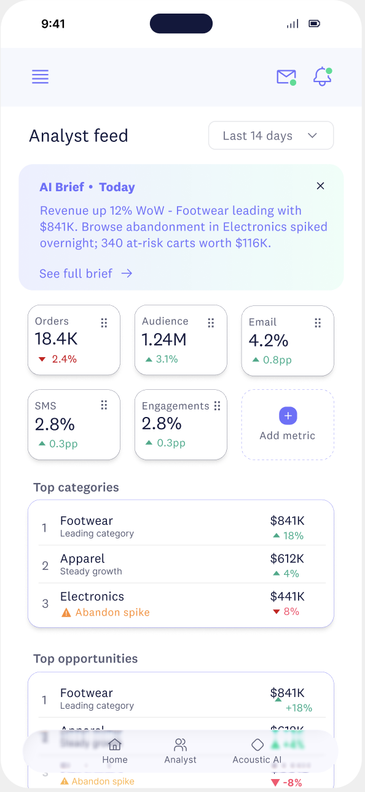
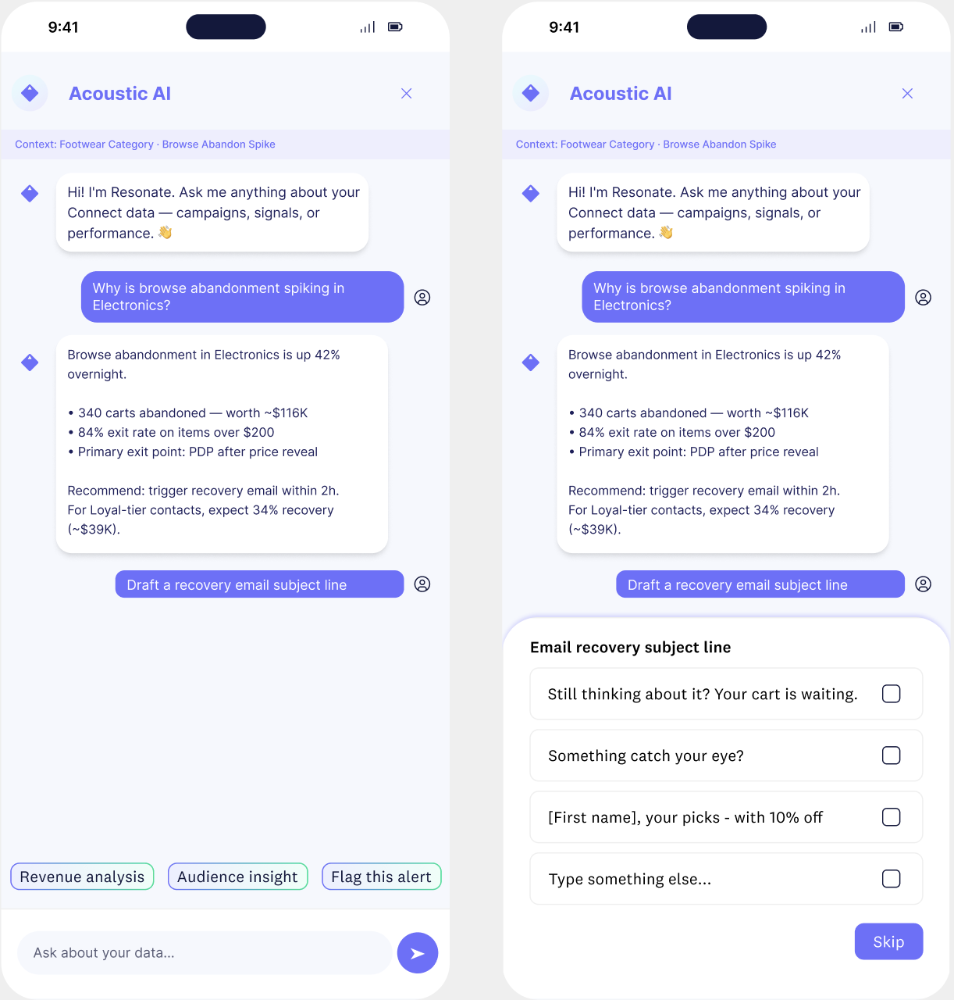
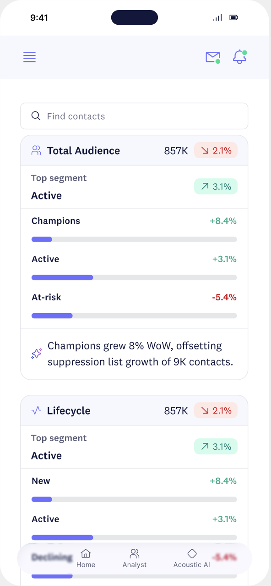

Acoustic’s first mobile app. a focused companion that puts live behavioral signals and Resonate AI in a marketer’s pocket.
Pulse is the first mobile app Acoustic built for Acoustic Connect. Marketing leaders and campaign managers needed a way to stay close to their customers’ live behavioral signals without being tied to a desktop. Facilitating decisive action the moment an opportunity emerged.
Over 14 weeks, I designed the end-to-end mobile experience: from the AI Brief that orients every session to the Resonate AI assistant that helps marketers investigate a signal, explore a segment, and draft a campaign response. all from their phone.
The goal wasn’t to put the full desktop product on a smaller screen. It was to answer a single question: what does a marketing leader need to know or do in the next 30 seconds?



Get Briefed · Resonate AI · Explore audience. designed for short sessions on the go
The most valuable signals were stuck on a desktop
Acoustic Connect detects live behavioral signals around the clock: product interest spikes, audience fatigue, browse abandonment surges. But the entire platform lived on desktop. A marketing leader in a meeting, between flights, or away from their desk had no way to check on a live signal or respond to a campaign issue without sitting down at a computer.
By the time they got back to their desk, the moment had often passed.
- High-intent customer signals detected overnight weren’t actioned until the next morning. or later
- Marketing leaders had no way to stay informed on campaign performance during travel or back-to-back meetings
- The Resonate AI assistant, one of the product’s most powerful features, was inaccessible anywhere but a browser
- Teams using competing tools that offered mobile access were getting to market faster
A focused companion, not a shrunken desktop
Acoustic already generated a daily AI Brief: a plain-language summary of the most important signals detected overnight. On desktop, it was one card in a busy interface. On mobile, it could be the entire starting point.
The design opportunity was clear: build a mobile experience around the signals and actions that matter most to a marketing leader on the move, and make Resonate AI available anywhere.
The goal became: Give every Acoustic user a knowledgeable marketing colleague in their pocket. One who’s already reviewed the overnight data before they wake up.
Three modes for a marketer on the move
Get Briefed → Explore → Act
The Brief
Every session starts with the AI Brief: a plain-language summary of what Acoustic detected since the last login. Rather than opening to a blank dashboard, the marketer immediately knows which revenue categories are leading or lagging, total audience size and week-over-week shifts, top-performing segments and emerging opportunities, and signals that are trending and worth investigating now. The Brief is designed to be read in under 30 seconds. enough to walk into a meeting informed, or decide whether a signal needs immediate action.
Explore
When a signal in the Brief deserves a closer look, the marketer can move directly into the Explore layer without losing context. The app surfaces the full audience picture across key views: Segments, Contacts, Campaign Performance, Behavioral Trends. A key interaction here was Customize Pulse: a drag-to-reorder dashboard that lets each user choose which metrics appear on their home screen.
Act
The most important interaction on mobile is the Resonate AI assistant. Designed for short-session, on-the-go use. A marketer who spots an at-risk segment in the Brief can immediately open Resonate and ask “Why is browse abandonment spiking in Electronics?” The assistant explains the behavioral pattern, surfaces the relevant audience data, and offers to draft a recovery email subject line on the spot. This creates a complete mobile loop: Signal surfaces in Brief → marketer investigates in Explore → Resonate AI drafts the response → campaign is flagged or launched.
Value is the real constraint
Mobile design for a behavioral marketing tool isn’t primarily a screen-size problem. It’s a value problem. The design had to earn every second of a marketing leader’s limited mobile focus.
01 Brevity
Every insight compressed to what a marketing leader needs in 30 seconds. The AI Brief is a summary, not a report.
02 Personalization
Customize Pulse gives each user control over which metrics appear first. The same app serves a CMO and a campaign manager differently.
03 Plain language
Resonate AI explains behavioral signals in marketing outcomes: revenue impact, audience risk, campaign opportunity. Not data model terminology.
04 Continuity
Segment data, contact profiles, and Resonate conversation history from desktop carry over to mobile seamlessly.
05 Action within reach
Draft subject lines, flag alerts, explore a contact. Every key next step reachable within two taps from the Brief.
Solutions
A marketing colleague in your pocket, already briefed and ready to act.
Lead with the Brief
The AI Brief is the homepage of the app. Not a dashboard, not a feed. The most important signals, every morning, before the marketer has to go looking.
Earned personalization
Customize Pulse is a drag-to-reorder experience which is simple, fast, and immediately useful. Users who set it up once get a homepage that reflects their actual priorities.
Mobile-first Resonate
The AI assistant redesigned for short sessions: direct answers, quick-tap actions, and subject line drafting that fits a mobile workflow instead of a desktop one.
Context without clutter
Segment health, contact-level behavior, and campaign performance available in the Explore layer which surfaced progressively, never all at once.
Signal to action
Every signal in the Brief connects directly to the relevant audience segment, contact list, or Resonate conversation. No dead ends, no hunting.
Instead of: Signal detected → only visible on desktop → marketer finds out tomorrow
Desired experience: Signal surfaces in the Brief → marketer investigates → Resonate drafts the response → campaign goes out today
The first mobile app in Acoustic’s history, shipped in 14 weeks
Pulse launched as Acoustic’s first ever mobile app. The design challenge wasn’t just building something that worked on a small screen; it was building something that made Acoustic’s most sophisticated capabilities feel immediately useful to a marketer with 30 seconds to spare.
The constraint wasn’t screen size. It was value. Asking “what does this person need in the next 30 seconds?” on every screen made the design better every single time.